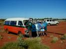
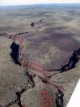
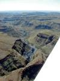
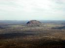
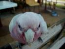
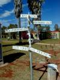
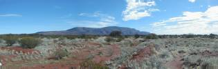

|
We had the best intentions of leaving Indee Station early because we wanted to spend some time at Mt Augustus. However, Colin and Betty gave us a hard time; They had invited us for breakfast and we sat a little too long talking and having a nice time.

When we finally got going it was with style. Colin, Betty, Stumpy, Jen, Nell and Frank had decided to follow us out to the airstrip and say farewell. We drove the 500 meters in the "Red Rock Express", Stumpy cleaned all Grummy's windows and a lot of photographs were taken. To be put in frame, Betty said, as we were the first guest that flew in.

To make sure other flying travelers won't miss this gem of a station, we had helped Colin to gather the relevant information to get listed in the various airstrip guides. We hope there will be an additional entry under "I" in AOPA's airfield guide in the future.
Colin and Stumpy drove down the runway ahead of Grummy to scare possible kangaroos, camels etc away. Everybody was waving their hands as we circled Indee Station a couple of times before we headed south for Karijini National Park.
We flew over Wittenoom, the town that was

closed many years ago because of blue asbestos
hazards. Once 1500 people lived here, now only about 20 are left. One of them is Dave Doust with his Karijini adventure tour that combines "The Miracle Mile" and "Knox Slide". Klaus
and I had been on this tour in June 1999, when we traveled around Western Australia -

probably the best tour we've ever done.
Then we flew up Wittenoom Gorge where the asbestos mine lies deserted, then over Karijini National Park with it's red cliffs covered in pale green spinifex. Good to see some of the spots we had hiked a year earlier.

Refueling finally in Paraburdoo, onwards to Mount Augustus - the largest rock in the world. Twice as big as Uluru (Ayers Rock) and not as spectacular, most people say. Probably due to 
low expectations we found the rock rather attractive and would have liked to stay a little longer to climb it. However, time was running out, we had to get going to make it to Carnarvon that day. Furthermore it was expensive to stay and get transport out to the Rock. The staff at the station/resort where we landed were not all that cooperative either, so we decided to just stay for a late lunch.

We landed in Carnarvon after 5 pm, so the refueling had to be done the following day (after hours call out fee was $30). The airport is quite central, so the taxi fare was cheap. We got a motel room for $66 for the three of us and went to a supermarket to buy dinner and supplies for the next couple of days.


|
{kind=link}
{kind=link}
{kind=link}
{kind=link}
{kind=link}
{kind=link}
{kind=link}